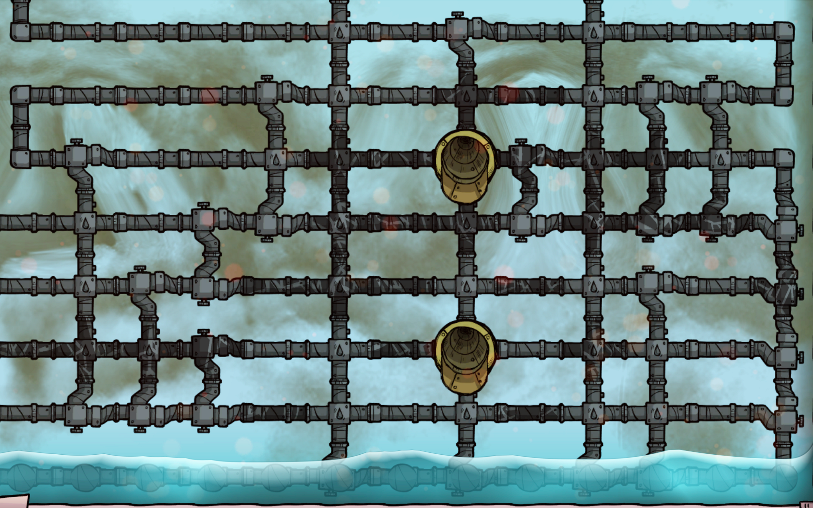
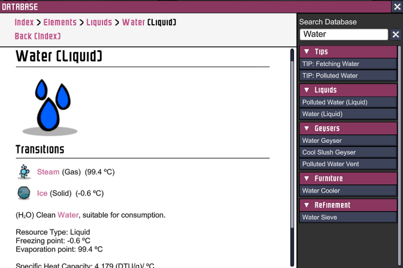
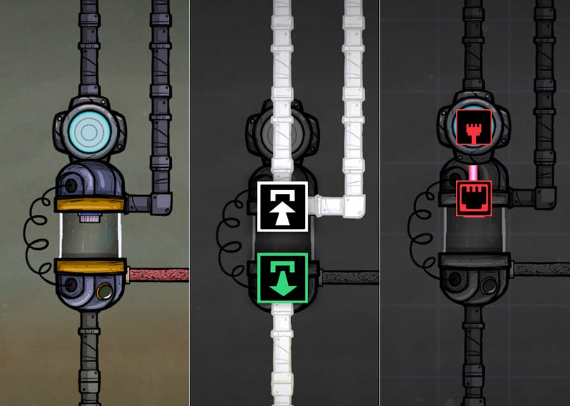
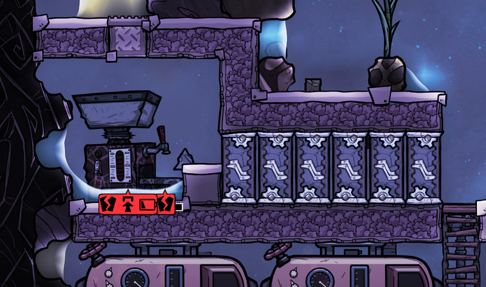
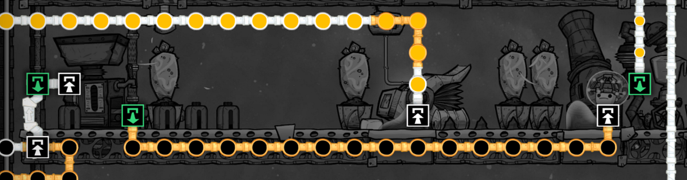

配管マスターへの道（熱とのつきあい方編）
配管マスターへの道（熱とのつきあい方編）

初めて寒冷バイオームや石油バイオーム、宇宙バイオームで配管をするとかなりの確率であっという間にパイプが熱ダメージ（冷却ダメージやヒートダメージ）でボロボロになっていき、水流が止まってしまう事態に出会うだろう。今回はその辺りがどういう理屈で起こり、どうやって回避するのが良いのか考える。
なお、前の記事と同じく、本記事で表記を統一するために特段明記しない限りすべて液体を扱ってるものとするが、気体でも基本は一緒である。
基本ルール
- パイプ類の素材は熱ダメージに関しては直接関係ない（熱伝導率的に間接的に関係はある）
- ダメージが起こるのは、パイプの中の物体の状態が変わるからである
つまり、パイプに熱ダメージがでるのはパイプが悪いからではない。パイプの中の液体が気化したり、固体化するからである。ちなみに一番最初の画像はサーミアム（900℃まで耐熱可）で作ったパイプを一瞬で壊した後の画像です。
液体の状態が変化するのは環境の熱のせいで、その熱がどれだけ伝導するかはパイプの素材による。
パイプの状態を管理する
パイプの中身の状態が変化するのを防ぐにはその中身の凝固点と沸点を把握する必要がある。
とりあえず真水であれば、-0.6℃で凝固、99.4℃で沸騰する。

30℃の真水を石油バイオームに送りたいとする（例えば、油井に送る）。目的地について消費されるまでの間にパイプの中で99.4℃以上にならなければ勝ちだ。
基本水が流れ続けている間は問題はないだろうが、油井が加圧状態になった場合、水の流れが止まる。
これをそのまま放置すると、パイプの中の液体がどんどん加熱されて、マグマや周辺機器の配置によっては熱ダメージが来る。気づいた時にはその辺りの原油に水が混じり、フィルターも必要になり… と面倒くさい。
こういう状態から自動的にリカバーするには、センサーをうまく使ってフォールバックを作っておくと良い。
パイプの終端に流体用温度センサーをつけて、一定の温度を超えたら安全な場所に排水するようにする。排水する場所は温度管理が比較的容易な液体倉庫が良い。液体倉庫にすでに40℃の水が存在する時に80℃の水を注入すると、60℃の水になる（元からあった水と流入した水の質量が同じだった場合）。
この緊急待避経路は冷却するときも一緒で、通常のラインとは別に作っておくとよい。
なお細かいが、この際、液体遮断機を真水の流れから分岐させる必要はない。以下のようにしておけば、遮断機が有効な時（この場合は設定した温度以下・以上の場合）は上から来た液体がそのまままっすぐ下に、無効な時は横に流れるようになる。

パイプの中身を選択する
ここまでの説明を見て分かると思うが、パイプの中身の温度を管理するにはかなり用意周到に準備する必要がある。正直言うと面倒くさい。
作物（特にスリートウィート）にある程度冷えた水を送る際にはしょうがないが、一例として排熱のために冷却剤を必要とする精錬装置などに送る液体はそもそも沸点や凝固点の高い液体を選択すれば、ほとんど何も考えず利用できる。
精錬装置に水を送ると一度に6℃〜50℃程度温度があがる。つまり、例えば浄水器から排出した真水を使った場合、いきなり90℃超えの液体として排出される可能性がある。そこまで来れば沸点の99.4℃まであと一歩である（「前持って冷やせ」と言う人もいるかもしれないが、それが面倒くさいからこういう話をしてるのだ）。
ちなみに自分は焦ってとりあえず水を精錬装置に流して、気づいた時にはそこから排水しようとした瞬間にパイプが壊れ、精錬装置を破壊すると中に大量に貯蔵されている160℃くらいの水が全部水蒸気になってあたりの機械を壊しまくる… という状態になって、チェルノブイリばりにその精錬装置を隔離したことが何回もある。

そこで、目先を変えて、送り込み液体を原油にするとどうなるだろう？
原油を精錬装置に送ると、15℃から138℃前後温度があがる。
真水よりひどい… が、大事なのは凝固点と沸点である。原油の凝固点は-40.1℃、沸点は399.9℃である。石油バイオームでよくある80℃前後の原油をそのまま送っても、200℃程度までしかあがらない。沸点の半分以下だ。
さらに原油にはもう一つ利点がある。精錬装置を通したあとの原油をまた冷やす… のではなく、そのまま製油装置で処理してしまえば良い。このゲームにはいくつかこのような装置があるのだが、製油装置は原油の温度が何℃であっても、70℃程度の石油として排出されるのだ。200℃の原油を通しても70℃！熱がどこかに消えてしまう！やった！

このように状態変化が起こる温度範囲が広い液体を使う事により、パイプへのダメージをあまり考えないで済む。
結局冷却・加熱はどうするべきなのか
さて、これで冷却にしろ加熱にしろ、原油を使うと幅が広がる、というのはわかった（ちなみに石油でもほぼ同じ事ができる）
では何かを冷却・加熱したい時は結局どうすればよいのか？
Oxygen Not Includedには様々な解があるのでなんとも言えないが、少なくとも加熱・冷却したい対象がパイプ内にある状態で直接何かするのはあまりスケールしないだろう。
冷却する場合、ウィーズウォートや反エントロピー型熱無効化装置(AETN)を直接パイプにあてるのではなく、まずそれぞれで水素を冷却し、その水素を直接対象の水なりなんなりに通してを冷却するか、水素で原油等を冷却してそれを送って冷却するか… という流れが美しいと思う。